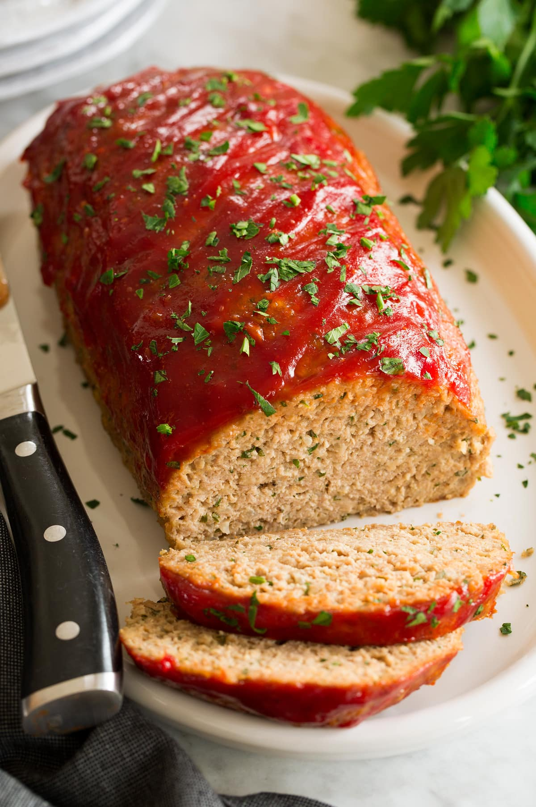

Meatloaf

Description
Meatloaf is a dish of ground meat that has been combined with other ingredients and formed into the shape of a loaf, then baked or smoked.
The final shape is either hand-formed on a baking tray, or pan-formed by cooking it in a loaf pan.
Ingredients
- 1 ½ pounds ground beef
- 1 egg
- 1 onion, chopped
- ½ cup milk
- 1 cup dried bread crumbs
- salt and pepper to taste
- 2 tablespoons brown sugar
- 2 tablespoons prepared mustard
- ⅓ cup ketchup
Steps
-
Preheat oven to 350 degrees F (175 degrees C).
-
In a large bowl, combine the beef, egg, onion, milk and bread OR cracker crumbs.
Season with salt and pepper to taste and place in a lightly greased 9x5-inch loaf pan, or form into a loaf and place in a lightly greased 9x13-inch baking dish.
-
In a separate small bowl, combine the brown sugar, mustard and ketchup. Mix well and pour over the meatloaf.
-
Bake at 350 degrees F (175 degrees C) for 1 hour.